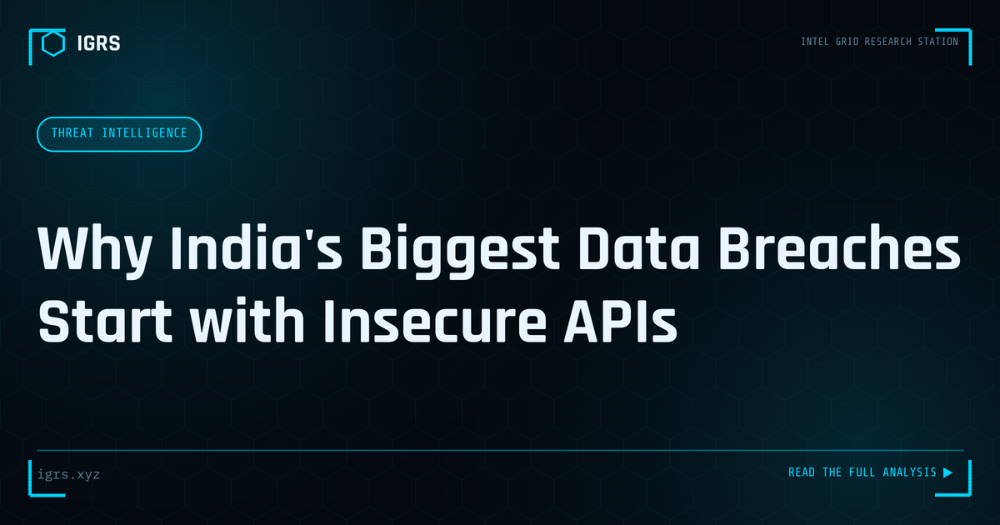

Why India's Biggest Data Breaches Start with Insecure APIs
Insecure APIs: A Leading Cause of Data Breaches
Application Programming Interfaces (APIs) power modern digital services — connecting apps, enabling integrations, and exposing functionality. But insecure APIs have become one of the leading causes of data breaches, exposing vast amounts of personal data. For Indian organisations building digital services and investigators examining breaches, understanding API security is essential. This guide explains how insecure APIs lead to breaches and how to address them.
Why APIs Are a Breach Risk
APIs directly expose data and functionality, often to the internet, making them a prime target. Unlike traditional applications with a user interface, APIs are designed for programmatic access, and security flaws in them can expose data at scale and at speed. Many major breaches have resulted from API vulnerabilities — broken authentication, excessive data exposure, or missing access controls — that allowed attackers to extract large volumes of personal data quickly.
Common API Vulnerabilities
| Vulnerability | Impact |
|---|---|
| Broken authentication | Unauthorised access |
| Broken authorisation | Accessing others' data |
| Excessive data exposure | Returning more than needed |
| Lack of rate limiting | Mass data extraction |
| Injection flaws | Database compromise |
Broken Object Level Authorisation
Among the most common and damaging API flaws is broken object level authorisation — where an API fails to verify that the requesting user is authorised to access the specific data requested. An attacker can simply change an identifier in the request to access other users' data. This flaw has caused numerous breaches, allowing attackers to enumerate through records and extract entire databases of personal information. Proper authorisation checks on every request are essential to prevent it.
Excessive Data Exposure
APIs sometimes return more data than the application needs, relying on the client to filter what is displayed. Attackers examining the raw API responses see all the returned data, including fields meant to be hidden. This excessive exposure can leak sensitive information that the user interface never shows. APIs should return only the data necessary for each request, filtering at the server rather than relying on the client to hide excess data.
The Scale Problem
What makes API breaches especially severe is scale. Without rate limiting and proper controls, an attacker exploiting an API flaw can extract data on millions of individuals rapidly and automatically. A single authorisation flaw, combined with the absence of rate limiting, can expose an entire user base. This scale, enabled by the programmatic nature of APIs, is why insecure APIs feature in some of the largest data breaches and why their security is so consequential.
Securing APIs and DPDP Implications
Securing APIs requires authentication and authorisation on every request, returning only necessary data, rate limiting to prevent mass extraction, input validation to prevent injection, and security testing throughout development. For Indian organisations, API breaches exposing personal data engage the DPDP Act 2026, with its breach notification requirements and penalties reaching ₹250 crore. API security is therefore both a technical necessity and a compliance imperative, directly affecting an organisation's legal exposure.
Building API Security
For Indian organisations, the prevalence of API-driven breaches makes API security a priority. By addressing the common vulnerabilities — broken authentication and authorisation, excessive data exposure, and missing rate limiting — through secure design, testing, and monitoring, organisations protect the personal data their APIs handle. For investigators, understanding API vulnerabilities aids breach investigation, revealing how attackers extracted data. As digital services increasingly depend on APIs, and as the DPDP Act raises the stakes of data breaches, securing these critical interfaces has become fundamental to both protecting individuals and meeting India's data protection obligations.